知识宇宙 · 功能交付
创世节点竞拍
每月排名末 50 名的创世节点在次月公开竞拍，出价最高者获得节点。本页只展示各页面和各阶段的样子；接口字段、状态取值和规则见接口契约。开发环境目前只有即将开拍的测试数据，为了展示各阶段，截图时模拟了接口返回，页面代码与联调时相同。
- 代码位置
- wujie_mono · apps/web3/genesis_node
- 分支
- feat/genesis-node-auction（MR !53，提交 660f31eb）
- 日期
- 2026-09-25
- 接口契约
- https://claude.ai/artifact/Cs6dsAJY8HjmTL6hZoLeuq（字段、状态、竞拍时间、结算与刷新规则以此为准）
- 涉及页面
- 知识宇宙页 · 竞拍列表 · 竞拍详情 · 出价页 · 规则弹窗
屏 1
知识宇宙页的竞拍入口新增
- 知识宇宙页
- 资产卡下方
- 入口卡在知识宇宙页资产卡下方，点击进入竞拍列表
- 副标题下方是本期结束倒计时
- 副标题是本期在拍节点数，其中还没有人出价的单独点出来
- 自己有参与时追加一行：出价领先几场、出价被超过几场；有被超过的场次时转红色
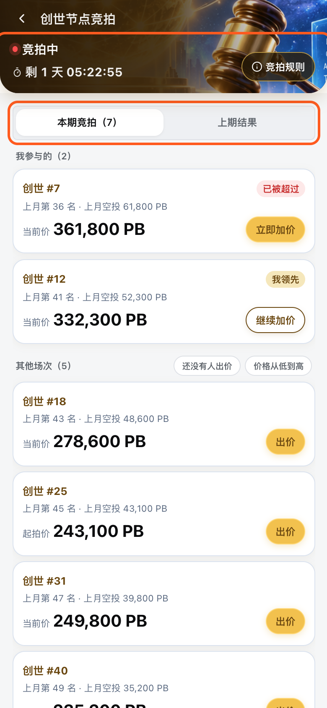
屏 2
竞拍列表新增
- 知识宇宙页
- 创世节点竞拍
- 顶部深金头图里是本期状态（竞拍中或开拍时间）和倒计时，右侧是「竞拍规则」入口；两个分段下都显示
- 下面分「本期竞拍（N）」和「上期结果」两段
- 自己参与的场次置顶，分「我参与的（N）」和「其他场次（N）」
- 我参与的里被超过的排最前；其他场次按上月排名，一期内顺序固定，价格刷新时卡片不跳
- 本期其他场次标题右侧有「还没有人出价」筛选（竞拍中且已有场次被出价时才出现）和「价格从低到高」排序，场次数随筛选变化
- 每行三行：席位号与状态徽章（竞拍中且我没出价时不显示徽章）、上月名次与空投、当前价或起拍价与按钮
- 行右侧按钮按我的状态变化：出价（我没参与）、立即加价（已被超过）为实心金色，继续加价（我领先）为白底描边；点整行进详情
- 我领先的行是浅蓝底，已被超过的行是浅红底；当前价上涨时价格闪一下并显示涨了多少
- 停留在页面时自动刷新，切回前台时也刷新
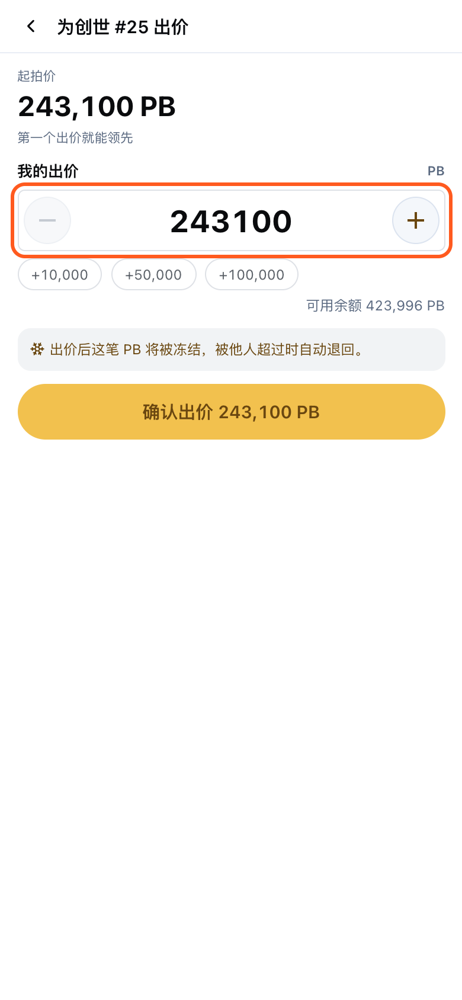
屏 3
出价页新增
- 竞拍列表
- 某一场的出价按钮
- 独立页面，从列表或详情的出价按钮进入；确认出价按钮紧跟在表单下方，出价成功后返回上一页
- 出价、立即加价与确认出价为实心金色；我领先时的继续加价为白底棕色描边
- 标题是「为创世 #N 出价」，上方显示当前价或起拍价，以及已出价次数与下次出价至少多少
- 出价须为起拍价 + 1 万的整数倍，不在档位上时提示最近可出金额并禁用确认；另有 +10,000 / +50,000 / +100,000 三个快捷加价
- 只用站内 PB 出价，快捷加价下方显示可用余额；余额不足时提示还差多少并禁用按钮
- 低于最低出价时出红字提示；别人抢先加价后只提示新的最低价，已输入的金额不变
- 自己已领先时顶部提示：上一笔先退回再冻结新出价；余额是否够按「余额 + 上一笔」计算
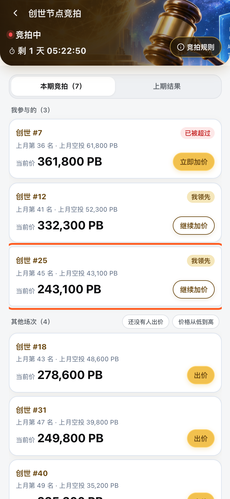
屏 4
出价成功后的列表新增
- 出价页
- 确认出价
- 出价成功后弹出提示，说明冻结金额；覆盖自己上一笔出价时一并说明上一笔已退回（提示已消失，截图中未显示）
- 刚出价的那一行移到「我参与的」，转成「我领先」，按钮变为「继续加价」
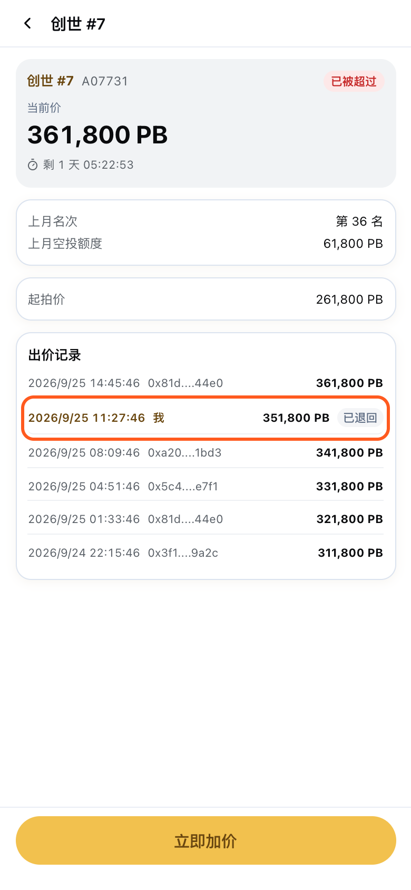
屏 5
竞拍详情新增
- 竞拍列表
- 点击整行
- 顶部是当前价与倒计时，下面是上月名次、上月空投额度
- 有人出价后单独列出起拍价
- 出价记录里自己的那行高亮并标「我」，已被超过的追加「已退回」
- 底部固定金色按钮：出价 / 立即加价（已被超过）/ 继续加价（我领先）/ 尚未开拍；期次结束后隐藏；没人出价且不在竞拍中时不显示出价记录
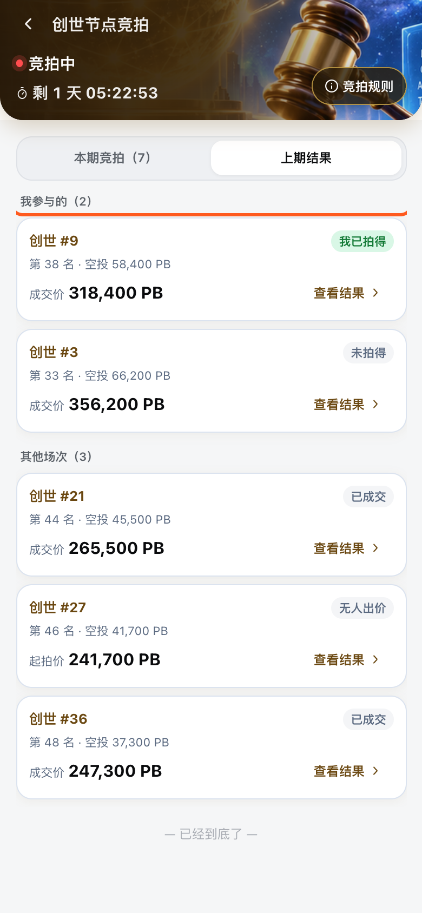
屏 6
上期结果列表新增
- 竞拍列表
- 上期结果
- 同样分「我参与的（N）」和「其他场次」
- 自己参与过的场次标「我已拍得」或「未拍得」，其余场次标「已成交」或「无人出价」
- 每行显示名次与空投额度、成交价；无人出价的显示起拍价
- 行右侧统一是「查看结果」，点击进入该场详情
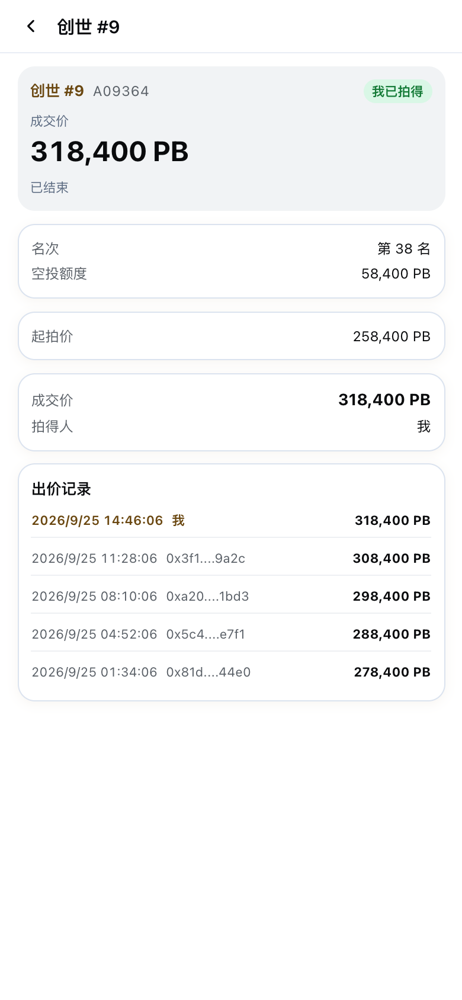
屏 7
上期结果详情新增
- 竞拍列表
- 上期结果
- 某一场
- 结算信息列出成交价与拍得人，拍得人是自己时显示「我」
- 无人出价的场次显示「本场无人出价」
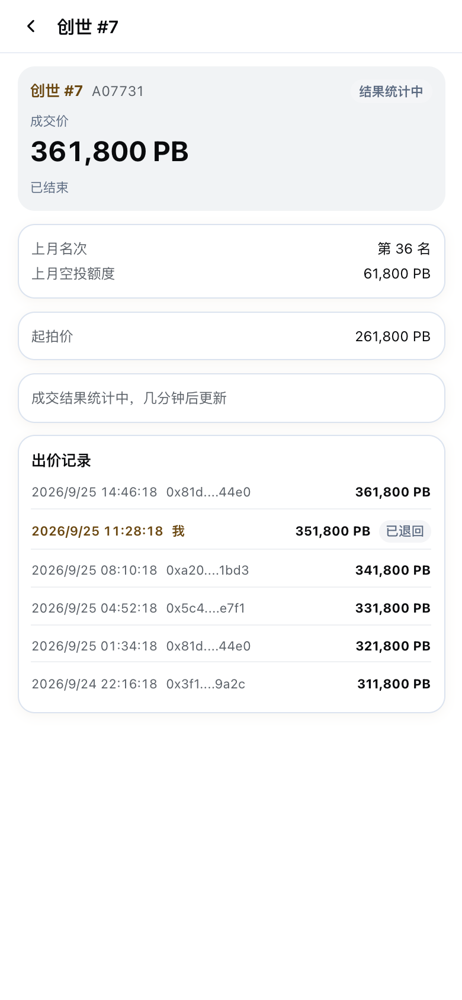
屏 8
期次刚结束：结果统计中新增
- 竞拍列表
- 点击整行
- 期次结束后不能再出价，底部出价按钮隐藏
- 接口返回结算结果之前，列表徽章和详情页显示「结果统计中」，详情页提示「成交结果统计中，几分钟后更新」
- 结算完成后自动显示成交价与拍得人
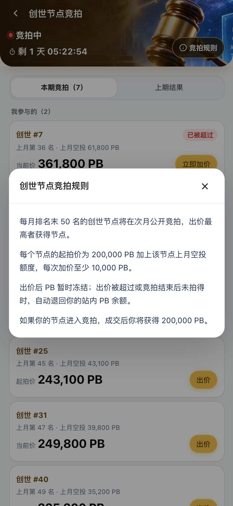
屏 9
竞拍规则说明新增
- 竞拍列表
- 规则
- 四条规则：末 50 名进入竞拍、起拍价构成与最低加价、冻结与退回到站内 PB 余额、节点被竞拍时你获得的金额
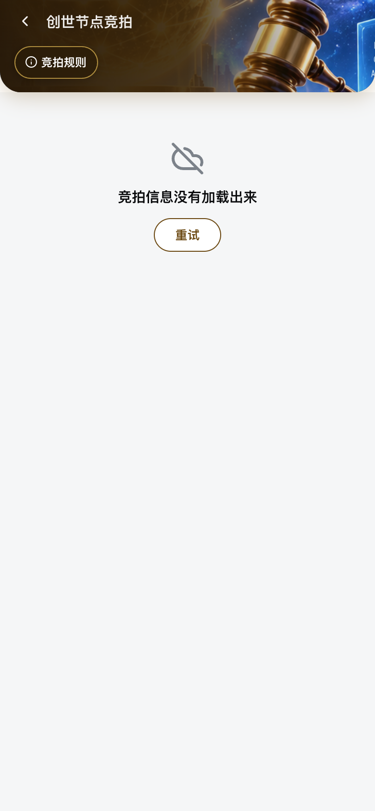
屏 10
加载失败新增
- 知识宇宙页
- 创世节点竞拍
- 一次都没拉到数据时显示「竞拍信息没有加载出来」和「重试」
- 已经有数据时拉取失败不打断页面，继续显示上次的数据并自动重试
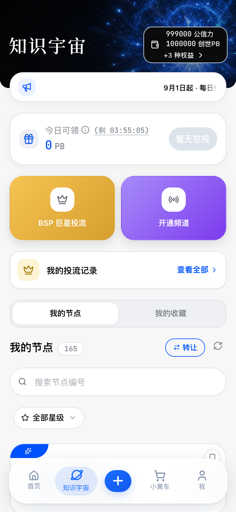
屏 11
还没有任何一期：入口卡隐藏新增
- 知识宇宙页
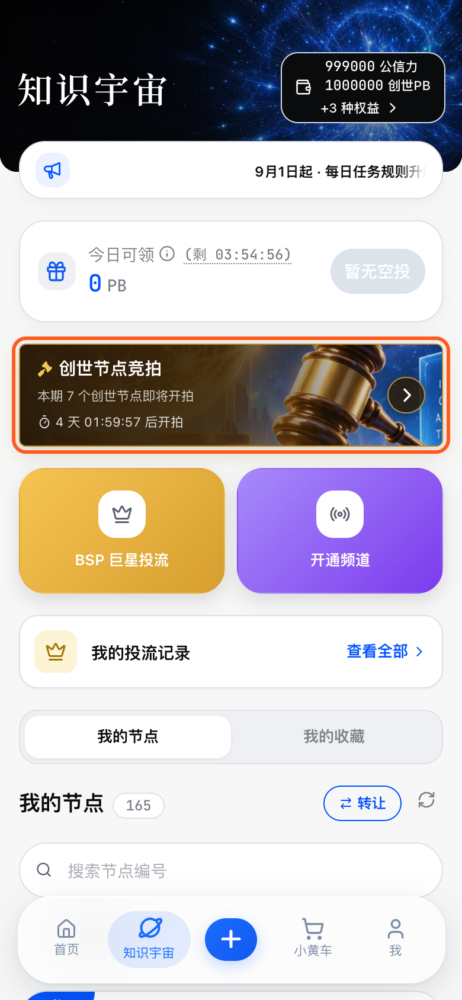
屏 12
第一期开拍前：入口卡新增
- 知识宇宙页
- 资产卡下方
- 名单公布后、开拍前，入口卡显示「本期 N 个创世节点即将开拍」
- 倒计时改为距开拍
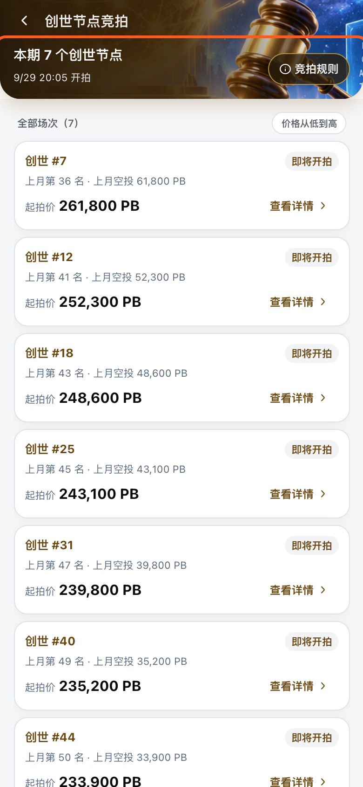
屏 13
第一期开拍前：竞拍列表新增
- 知识宇宙页
- 创世节点竞拍
- 没有上一期，所以不显示分段，只列出本期节点
- 顶部状态条显示「本期 N 个创世节点」和开拍时间：超过一天显示具体开拍日期时间，一天内显示倒计时
- 每场显示起拍价，徽章为「即将开拍」，按钮为「查看详情」；详情页底部按钮为不可点的「尚未开拍」
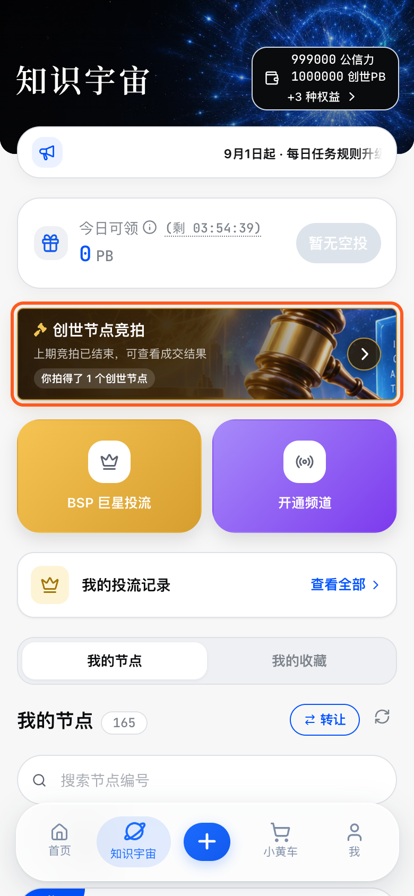
屏 14
两期之间：入口卡新增
- 知识宇宙页
- 资产卡下方
- 一期结束后、下期名单公布前，入口卡保留，文案为「上期竞拍已结束，可查看成交结果」
- 拍得节点的人追加一行「你拍得了 N 个创世节点」
- 这段时间没有倒计时
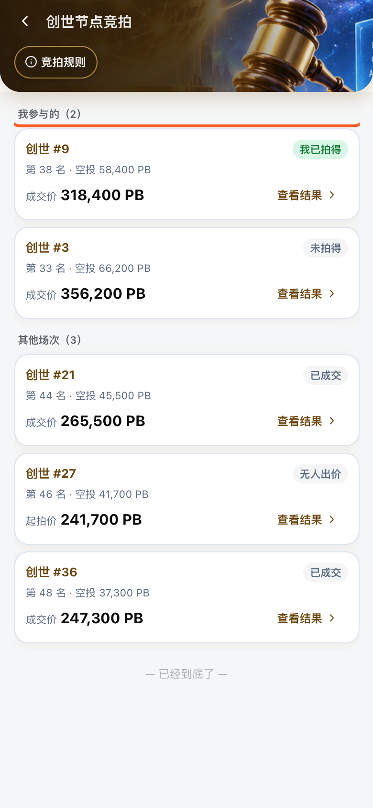
屏 15
两期之间：竞拍列表新增
- 知识宇宙页
- 创世节点竞拍
- 没有本期，所以不显示分段，直接展示上期结果
- 自己参与过的场次置顶，徽章为「我已拍得」或「未拍得」
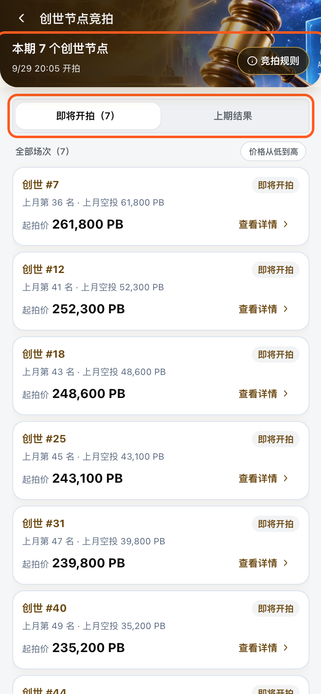
屏 16
下期名单已公布、尚未开拍：竞拍列表新增
- 知识宇宙页
- 创世节点竞拍
- 下期名单公布后，入口卡同第一期开拍前，显示即将开拍和距开拍倒计时
- 列表恢复分段：第一段为「即将开拍（N）」，第二段为「上期结果」